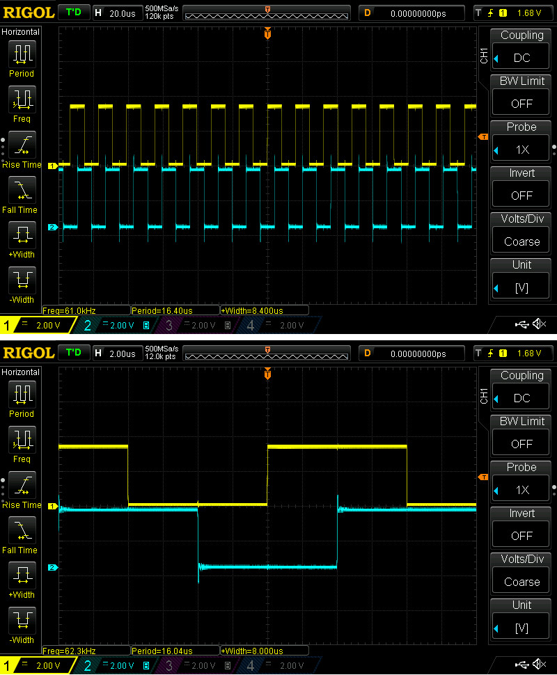

การเขียนโปรแกรมแบบ Multi-Tasking: TinyGo Goroutines vs. FreeRTOS#
Keywords: Go / TinyGo, Microcontroller Programming, Raspberry Pico, RP2040, FreeRTOS, Arduino Core for RP2040
▷ การเขียนโปรแกรมแบบ Multi-tasking#
บทความนี้นำเสนอตัวอย่างการเขียนโค้ดแบบ "มัลติทาสก์" (Multi-Tasking) โดยใช้ Goroutines และ Channels ในภาษา Go และคอมไพล์โค้ดด้วย TinyGo Compiler (ใช้เวอร์ชัน v0.35.0) เพื่อนำมาเปรียบเทียบกับการเขียนโค้ด Arduino Sketch โดยใช้ FreeRTOS สำหรับชิปไมโครคอนโทรลเลอร์ RP2040
เราจะใช้รูปแบบการทำงานของโปรแกรมสำหรับไมโครคอนโทรลเลอร์ดังนี้ มีการทำงานแบ่งออกเป็น 2 งานย่อย หรือ ทาสก์ (Tasks) ที่มีความสำคัญเท่ากัน แต่ละทาสก์ทำหน้าที่สลับสถานะลอจิกของขา GPIO ที่ใช้เป็นเอาต์พุตของชิป RP2040 โดยไม่มีการหน่วงเวลา ออสซิลโลสโคปแบบดิจิทัล จะถูกนำมาใช้วัดสัญญาณเอาต์พุตที่ขา GPIO เพื่อวิเคราะห์พฤติกรรมการทำงานของโปรแกรมในฮาร์ดแวร์จริง
การทำงานแบบ Multi-tasking สำหรับภาษา Go จะใช้ฟังก์ชันประเภทที่เรียกว่า Goroutines แต่ถ้าเป็นการเขียนโค้ดด้วย Arduino Core for RP2040 (ทดลองใช้เวอร์ชัน v4.3.0) เช่น สำหรับ RP2040 ก็อาจจะใช้ FreeRTOS port for RP2040 ซึ่งเป็นระบบปฏิบัติการเวลาจริง (RTOS: Real-Time Operating System) หรือ อาจเรียกว่า Real-Time Kernel และเป็นซอฟต์แวร์ประเภท Open Source ด้วย

รูป: โมเดลการทำงานแบบมัลติทาสก์สำหรับการทดสอบโดยใช้ TinyGo Goroutines + Go Channels
รูป: โมเดลการทำงานแบบมัลติทาสก์สำหรับการทดสอบโดยใช้ FreeRTOS Tasks + Binary Semaphores
▷ การเขียนโปรแกรมสำหรับ TinyGo#
เริ่มต้นด้วยโค้ดตัวอย่างสำหรับ TinyGo โดยเลือกใช้ขา GPIO15 และ GPIO14 เป็นขาเอาต์พุต และอ้างอิงโดยใช้ชื่อตัวแปรเป็น
A และ B ตามลำดับ มีการสร้างฟังก์ชัน toggleLED(...) เพื่อใช้เป็นฟังก์ชัน Goroutine
func toggleLED(led machine.Pin, chanIn, chanOut chan bool)
ledมีชนิดข้อมูลเป็นmachine.Pinและเป็นขา GPIO ที่จะใช้เป็นเอาต์พุตchanInและchanOutเป็น Go Channel ใช้เป็นช่องทางสำหรับอ่าน (ช่องสัญญาณเข้า) และช่องทางสำหรับเขียน (ข่องสัญญาณออก) ข้อมูลแบบboolตามลำดับ
ในฟังก์ชัน toggleLED() มีการใช้คำสั่ง for { ... } ภายในมีการใช้คำสั่งแรก <-chanIn
เพื่อรออ่านค่าแบบ bool จากช่อง chanIn
ถ้ายังไม่มีข้อมูล การฟังก์ชันนี้จะถูกหยุดไว้ชั่วคราวจนกว่าจะได้ระบข้อมูลเข้ามา
แต่ถ้าได้รับข้อมูลแล้วจึงสลับสถานะของลอจิกที่ขาเอาต์พุต และส่งข้อมูล true ไปออกทาง chanOut
การส่งข้อมูลออกทาง chanOut จะทำให้ฟังก์ชัน Goroutine ถัดไปที่รอรับข้อมูลอยู่ เปลี่ยนสถานะเป็นพร้อมทำงาน
for {
<-chanIn // Wait for the next token
led.Set(!led.Get()) // Toggle the LED output
chanOut <- true // Send a token
}
การทำงานของฟังก์ชัน toggleLED() จะต้องอ่านข้อมูลจาก chanIn ถ้าไม่มีข้อมูลเข้ามา จะต้องรอ
และเมื่ออ่านข้อมูลได้หนึ่งครั้งแล้ว จึงจะสลับสถานะลอจิกของขา led หนึ่งครั้ง แล้วจึงเขียนข้อมูลไปยัง chanOut
คำสั่งต่อไปนี้เป็นการสร้างช่องสัญญาณ Go Channel จำนวน 2 ช่อง ดังนี้
chan1 := make(chan bool)
chan2 := make(chan bool)
การเรียกฟังก์ชัน toggleLED() เพื่อใช้งานแบบ Goroutine จะมีคำว่า go นำหน้า ดังนี้
go toggleLED(A, chan1, chan2)
go toggleLED(B, chan2, chan1)
ฟังก์ชันแรกใช้กับขา A อ่านข้อมูลจาก chan1 และเขียนข้อมูลไปยัง chan2
ในขณะที่ ฟังก์ชันที่สองใช้กับขา B อ่านข้อมูลจาก chan2 และเขียนข้อมูลไปยัง chan1
เริ่มต้นจะมีการเขียนข้อมูลไปยัง chan1 ดังนั้นฟังก์ชัน Goroutine หมายเลข 1 สำหรับขา A จะเริ่มทำงานก่อน
package main
import (
"machine"
"time"
)
var (
A = machine.Pin(15) // LED 1 on GPIO 15
B = machine.Pin(14) // LED 2 on GPIO 14
)
func toggleLED(led machine.Pin, chanIn, chanOut chan bool) {
for {
<-chanIn // Wait for the next token
led.Set(!led.Get()) // Toggle the LED output
chanOut <- true // Send a token
}
}
func main() {
println("TinyGo RP2040 Demo...")
time.Sleep(time.Second)
println("CPU freq. (MHz):", machine.CPUFrequency()/1e6) // 125MHz
// Initialize the LED pins
A.Configure(machine.PinConfig{Mode: machine.PinOutput})
B.Configure(machine.PinConfig{Mode: machine.PinOutput})
// Create two channels for goroutine synchronization
chan1 := make(chan bool)
chan2 := make(chan bool)
// Start the goroutines to toggle LEDs
go toggleLED(A, chan1, chan2) // Goroutine (1) for pin A
go toggleLED(B, chan2, chan1) // Goroutine (2) for pin B
// Initial communication to start the first LED
chan1 <- true // Send the first token
select {} // Wait forever
}
รูป: ตัวอย่างการเขียนโค้ดโดยใช้ VS Code IDE + TinyGo Compiler
ตัวอย่างรูปคลื่นสัญญาณ 2 ช่อง จากขา GPIO15 และ GPIO14 ที่วัดได้ด้วยออสซิลโลสโคป เป็นดังนี้

รูป: สัญญาณเอาต์พุตที่ได้จากการทำงานของ Goroutines
จากรูปจะเห็นได้ว่า เมื่อสัญญาณแรกมีการเปลี่ยนสถานะลอจิกหนึ่งครั้ง ถัดไปสัญญาณที่สองเกิดการเปลี่ยนสถานะลอจิกหนึ่งครั้ง โดยมีระยะเวลาห่างกันประมาณ 4 ไมโครวินาที การทำงานของ TinyGo Runtime จะเป็นตัวจัดลำดับการทำงานของ Goroutines ให้สลับการทำงาน
▷ การเขียนโปรแกรม FreeRTOS: Binary Semaphores#
ตัวอย่างถัดไปเป็นการเขียนโค้ดด้วย Arduino Core for RP2040 ซึ่งจะมีการสร้าง FreeRTOS Tasks จำนวน 2 ทาสก์ ที่มีความสำคัญเท่ากัน และการสื่อสารกันระหว่างทาสก์ จะใช้วิธีที่เรียกว่า Binary Semaphores และจะใช้เพื่อสื่อสารจากทากส์หนึ่งไปยังอีกทาสก์หนึ่งในแต่ละทิศทาง และมีทาสก์แรกที่ถูกสร้างก่อน เป็นฝ่ายเริ่มต้นทำงานก่อน
#include <Arduino.h>
#include "FreeRTOS.h"
#include "task.h"
#include "semphr.h"
// LED Pins
#define LED1_PIN 15
#define LED2_PIN 14
// FreeRTOS Semaphore Handles for synchronization
SemaphoreHandle_t semaphore1, semaphore2;
// Struct to hold LED pin and semaphore handles
struct TaskParams {
int ledPin;
SemaphoreHandle_t semIn, semOut;
};
// Task to toggle an LED
void toggleLED(void *pvParameters) {
// Cast the parameter back to a pointer to TaskParams
TaskParams *p = (TaskParams *)pvParameters;
int ledPin = p->ledPin;
for (;;) {
// Wait for the semaphore
if (xSemaphoreTake(p->semIn, portMAX_DELAY) == pdTRUE) {
digitalWrite(ledPin, !digitalRead(ledPin)); // Toggle the LED
xSemaphoreGive(p->semOut); // Give the semaphore to the next task
}
}
}
void setup() {
// Initialize LED pins
pinMode(LED1_PIN, OUTPUT);
pinMode(LED2_PIN, OUTPUT);
// Create the binary semaphores
semaphore1 = xSemaphoreCreateBinary();
semaphore2 = xSemaphoreCreateBinary();
// Define struct instances for task parameters
TaskParams params1 = {LED1_PIN, semaphore1, semaphore2};
TaskParams params2 = {LED2_PIN, semaphore2, semaphore1};
// Create FreeRTOS tasks with struct as the argument
xTaskCreate(toggleLED, "Toggle LED1", 256, (void *)¶ms1, 1, NULL);
xTaskCreate(toggleLED, "Toggle LED2", 256, (void *)¶ms2, 1, NULL);
xSemaphoreGive(semaphore1);
vTaskStartScheduler(); // Start the FreeRTOS scheduler
}
void loop() {
}
รูป: การเขียนโค้ดด้วย Arduino IDE และตัวอย่างโค้ดที่ใช้ FreeRTOS Binary Semaphores
ตัวอย่างรูปคลื่นสัญญาณ 2 ช่อง จากขา GPIO15 และ GPIO14 ที่วัดได้ด้วยออสซิลโลสโคป เป็นดังนี้

รูป: สัญญาณเอาต์พุตที่ได้จากการทำงานของ FreeRTOS Tasks
จะเห็นได้ว่า รูปคลื่นสัญญาณทั้งสองคล้ายกับกรณีของ TinyGo กล่าวคือ เมื่อสัญญาณแรกมีการเปลี่ยนสถานะลอจิกหนึ่งครั้ง ก็จะสลับไปเกิดการเปลี่ยนสถานะลอจิกหนึ่งครั้งในสัญญาณที่สอง แต่ให้สังเกตว่า ระยะเวลาจากขอบขึ้นของสัญญาณแรกไปยังขอบขาขึ้นของสัญญาณที่สอง จะใช้เวลามากกว่ากรณีของ TinyGo
▷ การเขียนโปรแกรม FreeRTOS: Queues#
ตัวอย่างถัดไปเป็นการเปลี่ยนจาก Binary Semaphores มาเป็น FreeRTOS Queues เพื่อใช้เป็นช่องทางการอ่านและเขียนข้อมูล คล้ายกับกรณีของ TinyGo ที่มีการใช้ Go Channels อ่านข้อมูลเข้าและส่งข้อมูลออกแยกกัน
#include <Arduino.h>
#include "FreeRTOS.h"
#include "task.h"
#include "queue.h"
// LED Pins
#define LED1_PIN 15
#define LED2_PIN 14
// FreeRTOS Queue Handles for communication between tasks
QueueHandle_t queue1, queue2;
// Struct to hold LED pin and queue handles
struct TaskParams {
int ledPin;
QueueHandle_t queueIn, queueOut;
};
// Task to toggle an LED
void toggleLED(void *pvParameters) {
// Cast the parameter back to a pointer to TaskParams
TaskParams *p = (TaskParams *)pvParameters;
bool token;
int ledPin = p->ledPin;
for (;;) {
if (xQueueReceive(p->queueIn, &token, portMAX_DELAY)==pdTRUE) {
digitalWrite(ledPin, !digitalRead(ledPin)); // Toggle the LED
xQueueSend(p->queueOut, &token, portMAX_DELAY);
}
}
}
void setup() {
// Initialize LED pins
pinMode(LED1_PIN, OUTPUT);
pinMode(LED2_PIN, OUTPUT);
// Create the queues for inter-task communication
queue1 = xQueueCreate(1, sizeof(bool));
queue2 = xQueueCreate(1, sizeof(bool));
// Define struct instances for task parameters
TaskParams params1 = {LED1_PIN, queue1, queue2};
TaskParams params2 = {LED2_PIN, queue2, queue1};
// Create FreeRTOS tasks with struct as the argument
xTaskCreate(toggleLED, "Toggle LED1", 256, (void *)¶ms1, 1, NULL);
xTaskCreate(toggleLED, "Toggle LED2", 256, (void *)¶ms2, 1, NULL);
bool startToken = true;
xQueueSend(queue1, &startToken, portMAX_DELAY); // Send the start token
vTaskStartScheduler(); // Start the FreeRTOS scheduler
}
void loop() {
}

รูป: การเขียนโค้ดด้วย Arduino IDE และตัวอย่างโค้ดที่ใช้ FreeRTOS Queues
ตัวอย่างรูปคลื่นสัญญาณ 2 ช่อง จากขา GPIO15 และ GPIO14 ที่วัดได้ด้วยออสซิลโลสโคป เป็นดังนี้
รูป: สัญญาณเอาต์พุตที่ได้จากการทำงานของ FreeRTOS Tasks
▷ การเขียนโปรแกรม FreeRTOS: Task Notification#
ตัวอย่างถัดไปเป็นการใช้วิธีที่เรียกว่า Task Notification ที่รองรับการใช้งานโดย FreeRTOS Kernel สำหรับการสื่อสารกันระหว่างทาสก์ และมีตัวอย่างการเขียนโค้ดดังนี้
#include <Arduino.h>
#include "FreeRTOS.h"
#include "task.h"
// LED Pins
#define LED1_PIN 15
#define LED2_PIN 14
// Struct to hold LED pin and task handle
struct TaskParams {
int ledPin;
TaskHandle_t nextTask; // Handle of the next task to notify
};
// Task handles
TaskHandle_t task1Handle, task2Handle;
// Task to toggle an LED
void toggleLED(void *pvParameters) {
TaskParams *p = (TaskParams *)pvParameters;
int ledPin = p->ledPin;
for (;;) {
ulTaskNotifyTake(pdTRUE, portMAX_DELAY); // Wait for a notification
digitalWrite(ledPin, !digitalRead(ledPin)); // Toggle the LED
xTaskNotifyGive(p->nextTask); // Notify the next task
}
}
void setup() {
// Initialize LED pins
pinMode(LED1_PIN, OUTPUT);
pinMode(LED2_PIN, OUTPUT);
// Define struct instances for task parameters
TaskParams params1 = {LED1_PIN, NULL};
TaskParams params2 = {LED2_PIN, NULL};
// Create FreeRTOS tasks with struct as the argument
xTaskCreate(toggleLED, "Toggle LED1", 256, (void *)¶ms1, 1, &task1Handle);
xTaskCreate(toggleLED, "Toggle LED2", 256, (void *)¶ms2, 1, &task2Handle);
// Set the `nextTask` handles in the parameters
params1.nextTask = task2Handle;
params2.nextTask = task1Handle;
xTaskNotifyGive(task1Handle); // Notify the first task
vTaskStartScheduler(); // Start FreeRTOS scheduler
}
void loop() {
}
รูป: การเขียนโค้ดด้วย Arduino IDE และตัวอย่างโค้ดที่ใช้ FreeRTOS Task Notification
ตัวอย่างรูปคลื่นสัญญาณ 2 ช่อง จากขา GPIO15 และ GPIO14 ที่วัดได้ด้วยออสซิลโลสโคป เป็นดังนี้
รูป: สัญญาณเอาต์พุตที่ได้จากการทำงานของ FreeRTOS Tasks
▷ กล่าวสรุป#
บทความนี้ได้นำเสนอตัวอย่างการเขียนโค้ด TinyGo เปรียบเทียบกับการเขียนโค้ดด้วย Arduino Sketch โดยใช้ Arduino Core for RP2040 + FreeRTOS Kernel เพื่อสาธิตการสร้างและทำงานแบบมัลติทาสก์ (Multi-tasking)
การใช้ Goroutines (หรือจะเรียกว่า Co-routines) สามารถนำมาใช้ในการเขียนโค้ดแบบ Multi-tasking แต่ก็มีข้อดีและข้อเสียแตกต่างจากการใช้ FreeRTOS (Preemptive Scheduling) เช่น การทำงานของ Goroutine จะทำต่อเนื่องจนกว่า จะถึงคำสั่งที่จำเป็นต้องหยุดรอเงื่อนไข หรือรอเวลา จึงจะมีการเปลี่ยนการทำงานไปยัง Goroutine ในลำดับถัดไป แต่ละฟังก์ชันที่ทำงานแบบ Goroutine ทำงานเป็นหนึ่งทาสก์ และทาสก์เหล่านี้มีระดับความสำคัญเท่ากัน การทำงานของ Goroutine จะคล้ายกับการทำงานในระบบที่มีการจัดลำดับการทำงานแบบ Co-operative Scheduling
จากโค้ดตัวอย่างและการวัดสัญญาณเอาต์พุตจริง จะเห็นได้ว่า โค้ดภาษา Go ที่ใช้ Goroutines จะสร้างสัญญาณเอาต์พุตที่มีความถี่ได้สูงกว่า การเขียนโค้ดด้วย Arduino Sketch และใช้ FreeRTOS Kernel
This work is licensed under a Creative Commons Attribution-ShareAlike 4.0 International License.
Created: 2024-12-23 | Last Updated: 2024-12-23